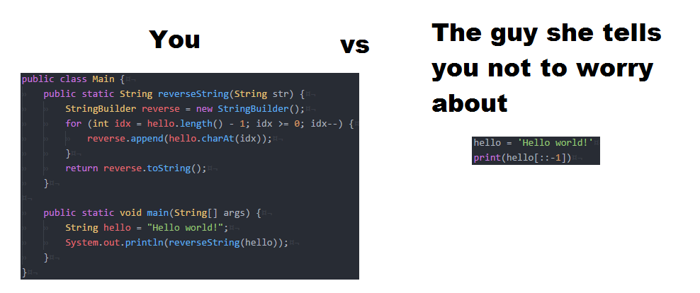

Top 5 hard skills to get any job you like in IT
The list presented in this article is my opinion. It can (and probably should) be different from others.
Based on my analysis of vacancies on LinkedIn. The purpose of this article is to present you, the readers, with a universal list of hard skills that you can learn or remember to qualify for 90% of the jobs on LinkedIn.
Of course, getting the skills presented in the article will not work in a week, it can take many months. Just be prepared for the fact that you will need patience and perseverance.
MS Office
To be honest, in my experience I have never worked in MS Office programs. Now everyone has been using their google alternatives like Google Slides or Google Sheets for a long time, but the essence remains the same. This is a direct analogue, but only in the browser, which is much more convenient.
MS Office programs are a standard that in the modern world should be known not just by every IT specialist, but in general by everyone. With their help, they write documentation, perform calculations in tables, make presentations for meetings, and much more.
Perhaps someone will say that they are too simple, I knew how to work in them at school. Chances are you do have basic MS Office skills, but what about advanced and more complex stuff.
For curiosity, find any MS Office course on Youtube and I assure you you will find new useful functionality for yourself and tell me - can this also be done in Excel?
SQL
I started with SQL. Structured Wuery Language is always needed, everywhere and in every position. It is needed by project managers, developers, marketers, analysts, technical writers, engineers, HR specialists and many others. In a word, everyone.
SQL allows you to make queries to databases, pull out the information you need from huge data warehouses of several hundred million rows.
For a better understanding, imagine a huge Excel spreadsheet, at least a thousand rows. Now imagine the time you spend to find the right record in it, you need a person or an amount of money. Someone will say - Okay, smart guy, I'll press ctrl + f and find the entry that I need. And someone will be right, but if you need to find multiple records with multiple names, age or other parameters. What to do then?
Here SQL comes to the rescue, with which you can find such records in a few seconds. In addition, Excel tables take up a lot of space, they are too heavy to store hundreds of millions of rows. For the sake of experiment, try to open a file with at least one hundred thousand lines. No, better not try, waste a year of your life on something more valuable.
By the way, if you decide to learn SQL, then I advise you to see my article about the best educational resources for this.
Python
And then there's the programming language. As you probably know, there are a lot of programming languages and each one is used for its own specific purposes. Why python? There are several reasons for this:
-
Its versatility. Programmers joke - if you don't know what programming language to learn - learn python. If you don't know what programming language will be popular next year - repeat python. And indeed it is. Python is used in many areas - in working with data, in writing complex algorithms, and even in developing functionality for a website.
-
Its simplicity. Python, when compared to other programming languages, is a fairly simple language. It has a simple syntax and understandable logic. Just look at the meme, which compares the syntax of Java (another popular programming language) and Python.
Java VS Python meme
Again, if you decide to learn python, I have an article on useful resources to help you do it.
Linux Administration
In the work of an IT specialist, one often has to deal with the basic administration of Linux systems. Just for example, quite recently I needed to analyze the load on the processor of the data center of the company where I work. Honestly, I don't often have to use some basic stuff in Linux administration, but I find it's best to be prepared for anything.
The title of this paragraph is rather broad. Anything can be included in administration - setting up access rights, setting up saving backups, setting up remote access, and much more.
Unfortunately, I can't recommend anything specific. Here you need to learn and know everything. This is a very useful skill to have, even if the job description you're applying for doesn't mention Linux.
Command line
This point is very closely related to the previous one. The command line is what I worked with for four months at my first job as a system administrator. For the first four months, I did not see the interface of the operating system familiar to everyone at all.
The command line greatly simplifies the work of an IT specialist. A lot of things are done faster through the command line. Even creating directories (folders) via the command line is faster.
With this skill, you will greatly increase your productivity, as well as become a more confident user and PC administrator. It will be enough to have basic commands and know their functionality. More complex and difficult to teach and practice, I think, is not worth it - they are narrowly focused. They are better if you already have a direction where you want to develop.
For example, if you want to deal with networks, then you should pay attention to network commands. If there are no clear preferences, learn the basics.
Conclusion
I hope my list was helpful to you. I formed it based on my experience, my knowledge and based on job descriptions on LinkedIn. If you have something to add or argue, I will always be glad to see you in our community